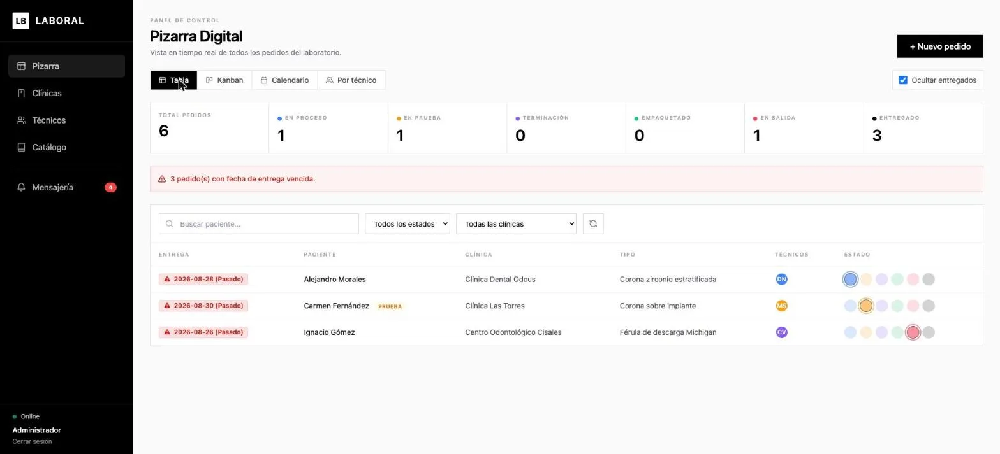
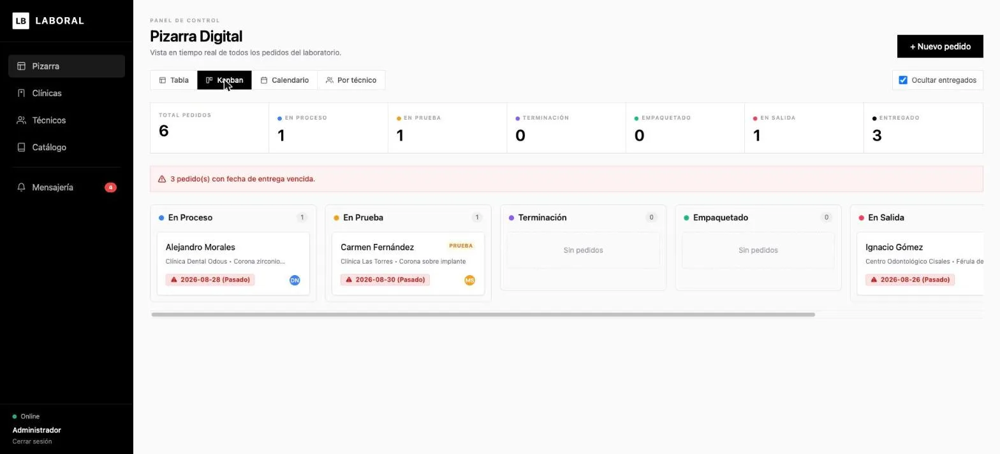
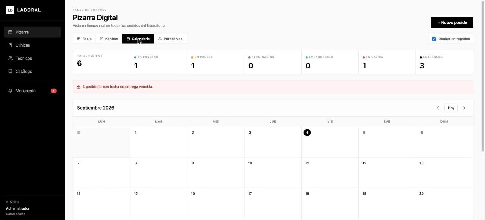
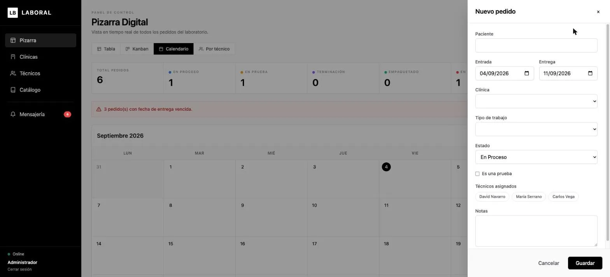
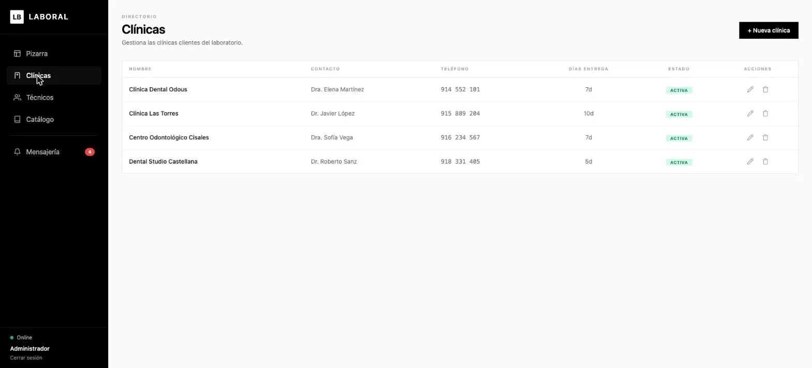
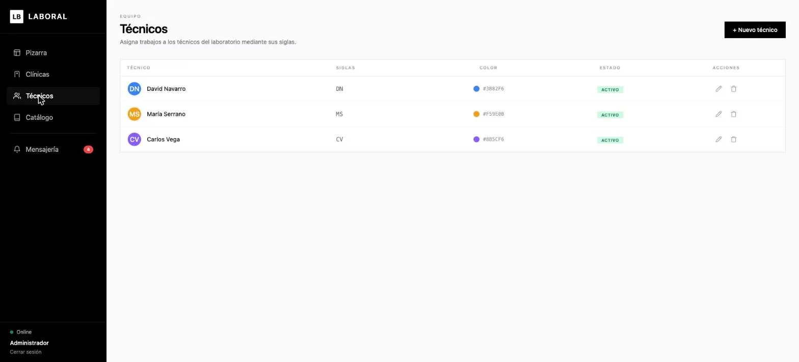
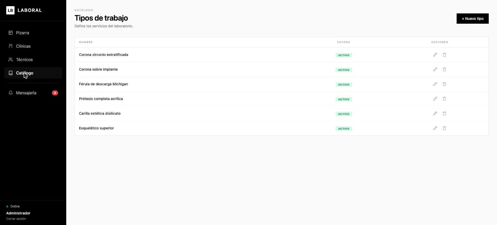
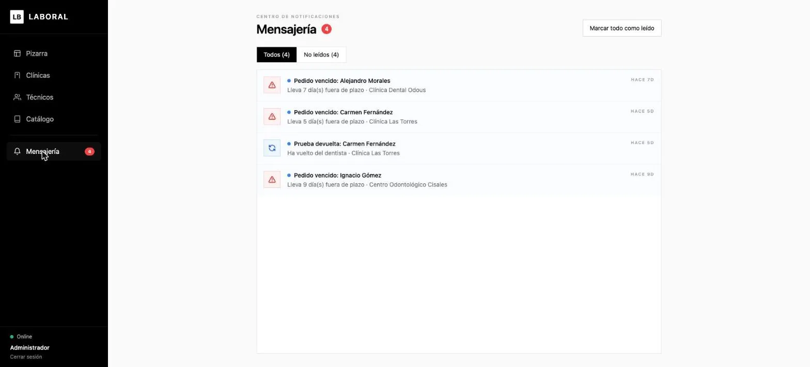

Pizarra con cuatro vistas
Tabla filtrable por estado y clínica, Kanban por estado del pedido, calendario mensual de entregas y carga de trabajo por técnico, todo sobre los mismos datos.
Jun 2026 – Actualidad · En solitario · En producción
Pizarra digital en tiempo real para gestionar los pedidos de un laboratorio dental, de la entrada a la entrega.

Laboral es una aplicación full-stack para un laboratorio dental que digitaliza por completo el flujo de pedidos entre el laboratorio y las clínicas que le envían trabajo. Sustituye la clásica pizarra física por un panel en tiempo real, con frontend en Angular y backend en Spring Boot. Actualmente en producción.
El laboratorio gestionaba sus pedidos con una pizarra física y notas manuales: sin trazabilidad, sin historial y con riesgo constante de perder información sobre plazos de entrega. Laboral centraliza ese flujo en un panel compartido por administración y técnicos, con alertas automáticas de pedidos fuera de plazo y actualización en tiempo real entre todos los puestos conectados.
Tabla filtrable por estado y clínica, Kanban por estado del pedido, calendario mensual de entregas y carga de trabajo por técnico, todo sobre los mismos datos.
Cada cambio se propaga al instante a todos los usuarios conectados, sin recargar. Cada pedido registra paciente, clínica, tipo de trabajo, fechas, técnicos y notas.
Un centro de notificaciones avisa de pedidos que han superado su fecha de entrega o de pruebas que vuelven de la clínica, sin revisar la pizarra a mano.
Gestión de clínicas (contacto y días de entrega por defecto), técnicos identificados por siglas y color, y catálogo de trabajos: coronas, férulas, prótesis, carillas…
Pizarra de pedidos en sus distintas vistas, directorios, catálogo y centro de mensajería. Pulsa una captura para ampliarla.








Puedo enseñarte el proyecto en detalle o contarte cómo lo construí.